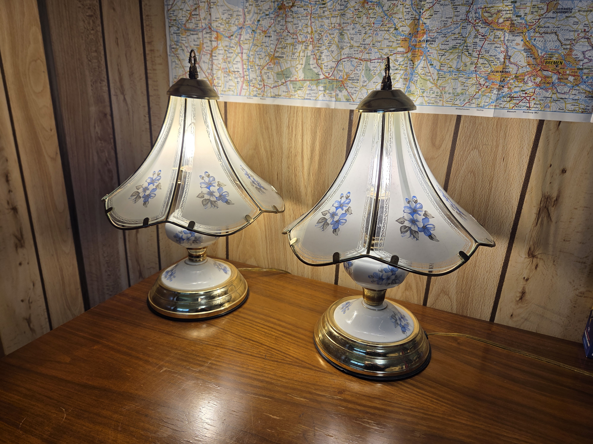
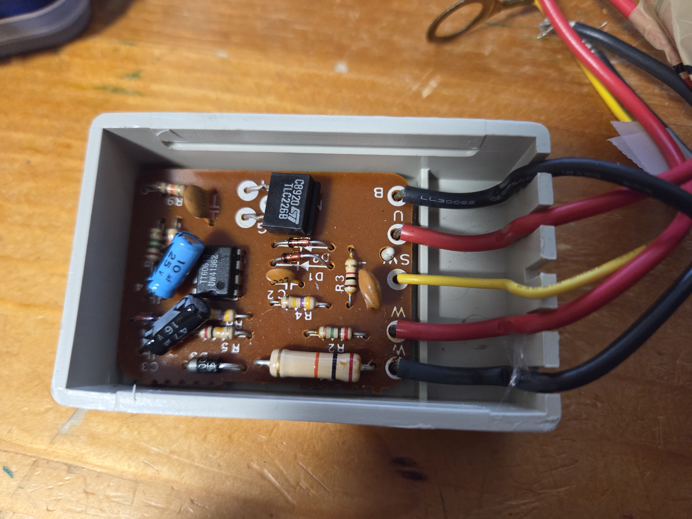
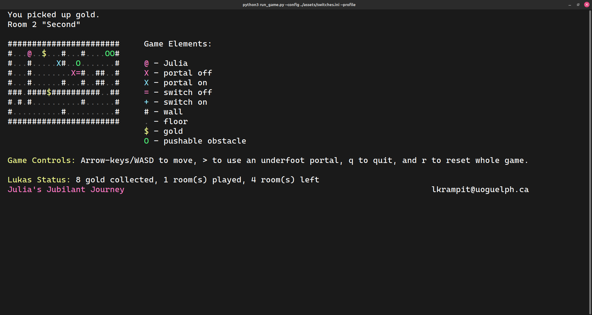
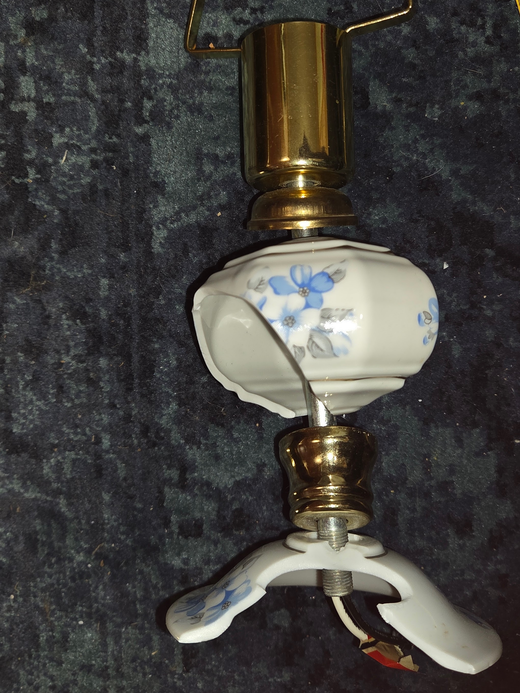
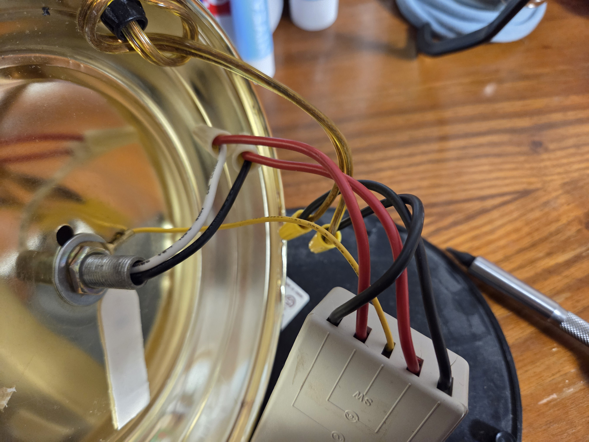

When my grandmother Edith passed away I inherited two beautiful touch-lamps. When I took them into my care they each came with incandescent
bulbs. They worked great for a really long time. Then the first one broke February 2025. It had a bright flash and then went out. It just
looked like the incandescent filament burnt out but when I replaced the bulb and plugged the lamp back in it turned on immediately and nothing happened
anymore when I touched it. This means it was on full brightness all the time with no way to turn it off or dim it. An indeterminate
amount of time later the same thing happened to the second lamp. Both lamps behaved like this
with incandescent bulbs and dimmable LEDs. Naturally, the short term solution was to put the two lamps on a switched power-bar so
I didn't need to unplug them all the time.
The long term solution took me until August since I needed a time when I wasn't swamped with school work
and because I needed to build up the nerve to fix them. I had never done any electrical work before. Since then I have put together
industrial combined panels for 3-phase 400V and am much more comfortable with safely performing electrical work.


After some investigation I traced the problem back to the electronics inside the touch switch control box. Visually I could see nothing wrong with any of the capacitors, diodes, or resistors. Presumably something burn out in one of the solid state chips. I was not able to find a data sheet or specifications on this touch switch so it seemed the best option was to source replacement switches. Unfortunately, Neutron Electronics closed down in Guelph so I had to try and find somewhere else to purchase these switches. I found Current Electrical Supply and was able to special order in some new switches and I also picked up some additional wire nuts. After a few weeks I got the call that my switches had arrived in store and I went to pick them up. By this time it was September and I had started school again. The replacement sat and waited until the Christmas break for when I happened enough time to perform the repair.
The repair
Need a pic here of the big and small wire nuts and try to get the new black box in there.


